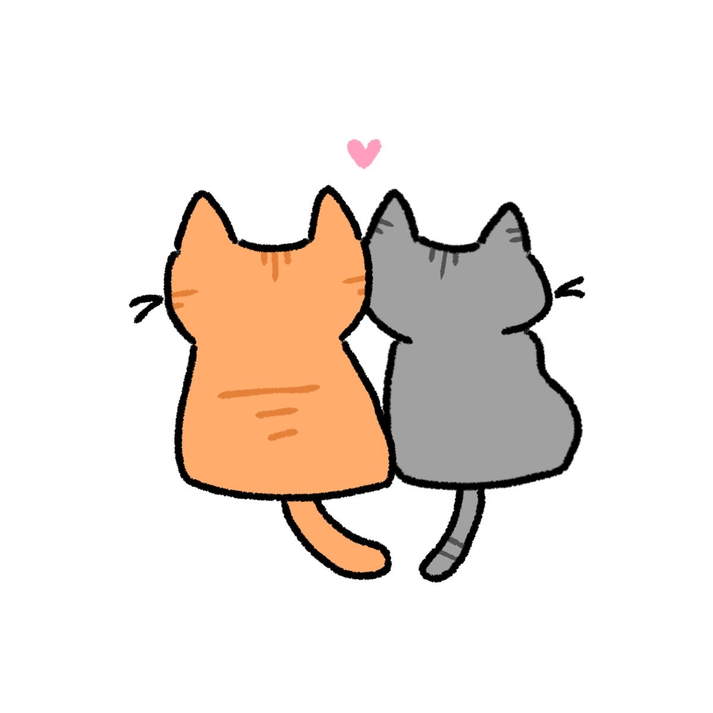

A PERSONAL SPACE FOR READING & REFLECTION
关于阅读、观察，
以及思考本身。
在不断认识世界的过程中，留下自己的感受与理解。
这里是一个记录阅读、观察与思考的个人空间。我喜欢从不同的事物中获得启发：一本书、一部电影、一段历史，也可能是日常生活中一个不起眼的瞬间。它们有时带来新的认识，有时让熟悉的事物变得陌生，也让我有机会重新审视那些习以为常的观念。
我希望把这些零散的感受和想法认真地整理下来。关于作品，也关于生活；关于个人经验，也关于更广阔的世界。这里不追求给出标准答案，只希望保留观察、理解和思考的过程。
最新文章
最近发表的三篇 · 查看全部文章 ↗A LITTLE ABOUT THE WRITER
关于我

我是一个对世界保持好奇，也认真热爱生活的人。
我喜欢阅读、观察和思考。比起急着接受现成的答案，我更愿意多问一个为什么；比起简单地判断对错，也希望多理解一些事情发生的缘由。生活中许多看似平常的细节，都值得停下来看看。
阅读和写作是我认识世界、整理自我、不断修正想法的方式。我希望自己始终保有独立思考的能力，也愿意理解不同的人和经验。这里记录的，是一路阅读、生活与探索时留下的感受。
当然，我也把很大一部分温柔留给家里的两只猫。它们是我生活中非常重要的家人和陪伴。喜欢看它们自在地待在身边，也珍惜那些被它们填满的普通日常。对我来说，爱它们不是生活的点缀，而是生活里真实、具体又重要的一部分。